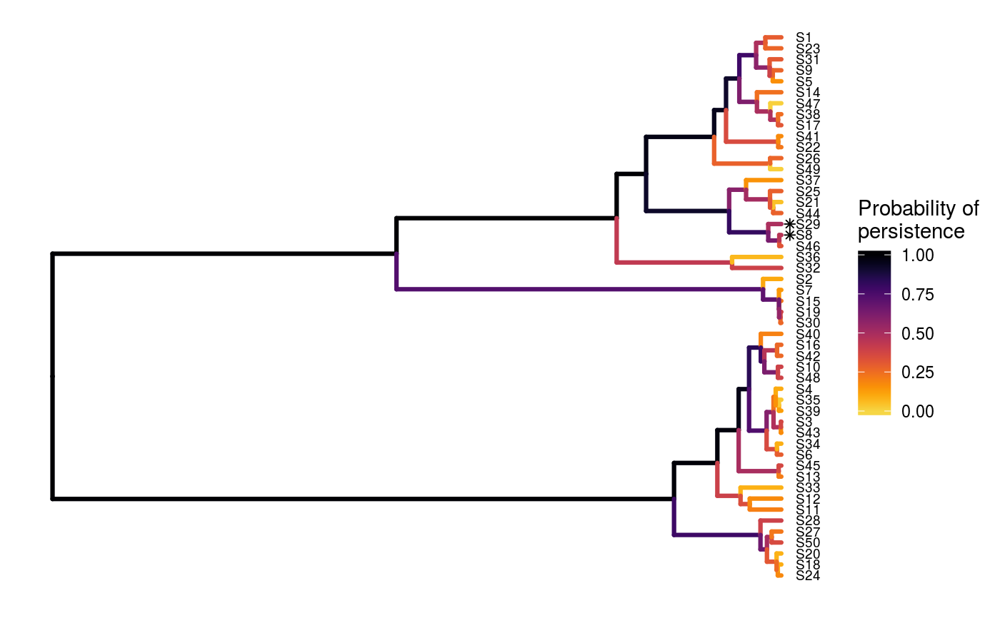

Random solutions for the 'Project Prioritization Protocol' problem
Source:R/ppp_random_solution.R
ppp_random_solution.RdGenerate random solutions for the 'Project Prioritization Protocol' problem.
Although conservation projects should, ideally, not be funded based on random
allocations, it can be useful to compare the effectiveness of solutions to
random decision in order to evaluate their effectiveness.
When informing conservation actions, it is strongly recommended to
use the ppp_exact_solution method because it can identify
optimal funding schemes with a guarantee.
ppp_random_solution(x, tree, budget, project_column_name, cost_column_name, success_column_name, locked_in_column_name = NULL, locked_out_column_name = NULL, number_solutions = 1L)
Arguments
| x |
|
|---|---|
| tree |
|
| budget |
|
| project_column_name |
|
| cost_column_name |
|
| success_column_name |
|
| locked_in_column_name |
|
| locked_out_column_name |
|
| number_solutions |
|
Details
The random solutions are generated using the following algorithm. All projects are initially selected for funding. Next, a project is randomly deselected for funding (removed), and this step is repeated until the cost of the remaining projects is within the budget. Note that projects that have zero cost are never deselected for funding, and are always included in the solutions. The different solutions are then evaluated according to the 'expected phylogenetic diversity' metric (Faith 2008).
References
Faith, D. P. (2008). Threatened species and the potential loss of phylogenetic diversity: conservation scenarios based on estimated extinction probabilities and phylogenetic risk analysis. Conservation Biology, 22, 1461--1470.
See also
For other methods for generating solutions for the 'Project
Prioritization Protocol' problem, see ppp_heuristic_solution
ppp_exact_solution, and ppp_manual_solution.
To visualize the effectiveness of a particular solution, see
ppp_plot.
Examples
# load built-in data data(sim_project_data, sim_tree) # print simulated project data set print(sim_project_data)#> # A tibble: 6 x 10 #> name cost success locked_in locked_out S1 S2 S3 S4 S5 #> <chr> <dbl> <dbl> <lgl> <lgl> <dbl> <dbl> <dbl> <dbl> <dbl> #> 1 S1_project 105. 0.782 FALSE FALSE 0.651 0 0 0 0 #> 2 S2_project 110. 0.959 TRUE FALSE 0 0.837 0 0 0 #> 3 S3_project 104. 0.922 FALSE FALSE 0 0 0.830 0 0 #> 4 S4_project 100. 0.748 FALSE TRUE 0 0 0 0.516 0 #> 5 S5_project 105. 0.912 FALSE FALSE 0 0 0 0 0.872 #> 6 baseline_~ 0 1 FALSE FALSE 0.0279 0.0859 0.174 0.335 0.199# print simulated phylogenetic tree data set print(sim_tree)#> #> Phylogenetic tree with 5 tips and 4 internal nodes. #> #> Tip labels: #> [1] "S1" "S5" "S4" "S2" "S3" #> #> Rooted; includes branch lengths.# plot the simulated phylogeny plot(sim_tree, main = "simulated phylogeny")# generate 10 random solutions that meet a budget of 300 s1 <- ppp_random_solution(sim_project_data, sim_tree, 300, "name", "cost", "success", number_solutions = 10) # print solutions print(s1)#> # A tibble: 10 x 12 #> solution objective budget cost optimal method S1_project S2_project #> <int> <dbl> <dbl> <dbl> <lgl> <chr> <lgl> <lgl> #> 1 1 2.90 300 210. NA random FALSE TRUE #> 2 2 4.41 300 209. NA random FALSE FALSE #> 3 3 2.59 300 205. NA random TRUE FALSE #> 4 4 4.43 300 214. NA random FALSE TRUE #> 5 5 3.23 300 215. NA random FALSE TRUE #> 6 6 2.90 300 205. NA random FALSE FALSE #> 7 7 3.52 300 205. NA random FALSE FALSE #> 8 8 3.23 300 215. NA random FALSE TRUE #> 9 9 2.90 300 210. NA random FALSE TRUE #> 10 10 3.12 300 215. NA random TRUE TRUE #> # ... with 4 more variables: S3_project <lgl>, S4_project <lgl>, #> # S5_project <lgl>, baseline_project <lgl># view histogram of their objective values hist(s1$objective, xlab = "solution objective")# view histogram of their costs hist(s1$cost, xlab = "solution cost")